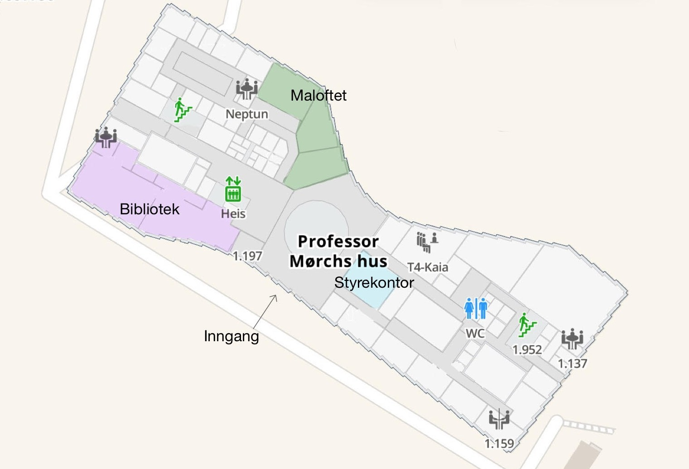

Som deltakende bedrift på Bedriftsdagen får man mulighet til å komme i kontakt og nå ut til fremtidens arbeidstakere blant annet gjennom stands, foredrag og intervjuer. Med deltakende studenter fra 1. – 5. klasse på Marinteknikk vil man som bedrift kunne være med å påvirke studentenes framtidige studiespesialisering og potensielt karrierevei. Deltakende bedrifter oppfordres til å ta med noe praktisk som drar studentene til standen sin, dette kan for eksempel være noe som kan testes, en utfordring å løse, eller noe spennende å se på!
I år arrangeres Bedriftsdagen for første gang i Professor Mørchs hus på nye campus Tyholt. Adressen hit er:
Institutt for marin teknikk, Professor J.H.L. Vogts vei 1A, 7052 Trondheim.
Vi gleder oss til å ønske alle bedrifter hjertelig velkommen til en spennende og inspirerende dag!
På nettsiden til vår leverandør av stand-utstyr kan dere selv bestille det dere trenger av ekstra utstyr.
Her kan dere bestille ekstra bord, skjerm eller lignende utover det som er inkludert i kontrakten.
Online skjema for bestilling finner dere
her.
Ta gjerne kontakt dersom noe er uklart rundt dette.
Bestillingsfrist for messeutstyr fra Trondheim Messeselskap er 9. oktober. Vi stiller med folk til å hjelpe med opp- og nedrigg.
Utstyr kan sendes til adressen: Institutt for marin teknikk, Professor J.H.L. Vogts vei 1A, 7052 Trondheim, og kan sendes slik at det ankommer dagen før, altså den 15.oktober.
Bedriftene får mulighet til å holde speedintervjuer med studenter gjennom hele dagen.
Dette kan være aktuelt både for sommerjobber og for nyutdannede. Hver bedrift får tildelt et grupperom som står til disposisjon hele dagen.
Speedintervjuer arrangeres parallelt med standvirksomheten, og er svært populært blant studentene.
Dette gir en unik sjanse til å komme tett på motiverte kandidater og potensielt sikre seg en snart ferdigutdannet sivilingeniør med ettertraktet kompetanse.
Skulle din bedrift være interessert i dette, ta kontakt med din bedriftskontakt eller
edvard.stene@bedriftsdagen.no.
Her får bedriftene 5–8 minutter til å presentere sitt sommerjobbtilbud for studentene.
Målet er å gi de yngre årstrinnene en bedre forståelse av hva bedriftene ser etter i en sommerstudent, samt praktisk informasjon om søknadsprosessen og aktuelle frister.
Sommerjobbmaraton skaper tidlig interesse og sikrer bedriftene mange engasjerte og motiverte marinstudenter i søkermassen.
I forkant av Bedriftsdagen vil det være mulig for bedriftene å profilere seg på vår Instagram-kanal,
som når ut til studentene. Dette gir en ekstra mulighet til å synliggjøre bedriftens aktiviteter og engasjement på en uformell og effektiv måte.
Dersom din bedrift ønsker å benytte seg av denne muligheten, ta kontakt med
julie.holm@bedriftsdagen.no.
For tidligere studenter eller bedriftsrepresentanter som er interessert, har vi lagt ved noen bilder av bygget. Om dere går rett frem fra inngangen og gjennom den første glassdøren, kommer dere til 4. klasse sine lesesaler, også kalt Maloftet. Dersom dere i stedet skal til det nye styrekontoret, går dere til venstre fra hovedinngangen, forbi trappen og inn glassdøren. Her vil kontoret være det første på venstre side.
.jpg)


Om dere ankommer med bil, er det foreløpig gratis parkering både på grusplassen nede ved veien, utenfor barnehagen og på oppmerkede parkeringsplasser med elbillader. Ved eventuelle endringer vil dette bli merket med skilter. For å komme til inngangen må man gå rundt bygningen fra parkeringsplassen.